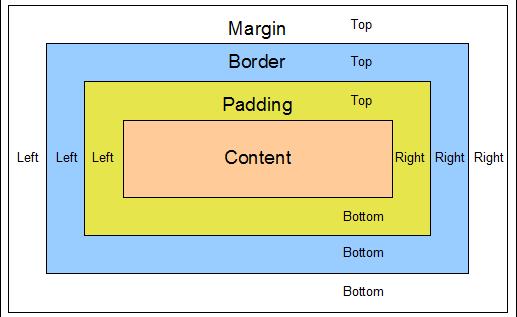

| Version Control, Git, and GitHub |
| Margin, Border & Padding |
| Arrays & Hashes |
| Diversity in Tech |
| sort_by Enumerable Method! |
| Ruby Classes |
| Ruby Hashes vs JavaScript Objects |
| Ruby on Rails |
When you are writing a code, sometimes you'll want to create things like headers, footers, navigation bars, anything that kinda resembles a rectangle with a function (even if the function is to stay put and look a specific color, it's doing a job!)
When you create these things, more often than not you'll be using div tags. Divs allow you to create a space for just about whatever you put your mind to, really. Pretty neat, right?
When working with these, you'll most likely think about specific properties such as location of divs on your page, location of content within div, etc. Thats where the margins, borders, and padding come into play!
There are several different ways to move around content within your page. However, when you create something like a div you can change their own unique properties, as just mentioned, to help with the whole process.
Simply put, these things have to do with spacing. The margin is the space surrounding your div. You can think of border as a wall containing your content, which also takes up space in your page (and can be played with to be thick, thin, or even invisible!). Then we have our padding, which is the space between your border and your content. Pretty simple, right? Here's a quick little image to help you better visualize what i'm talking about!
Thanks for reading!